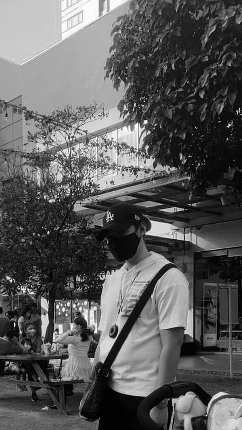

CARAIG, John Michael
Student IT
Contact
Email: jmcaraig365213@gmail.com
Phone: +123 456 789
Social: @yourhandle
Skills
- HTML, CSS, JavaScript
- Python, Java
- Database Management (MySQL, PostgreSQL)
- Network Troubleshooting
- Cybersecurity Fundamentals
About Me
I'm John Michael Caraig, a passionate IT student with a keen eye for problem-solving and a drive to create efficient and user-friendly solutions. I specialize in web development and IT support. My goal is to continuously grow and contribute to the ever-evolving tech industry.
Education
- Notre Dame University (Pre School)
- Immaculate Conception Cathedral School (High School & Senior High School)
- Bachelor of Science in Information Technology - University of the East (2023 - Present)
Experience
- Developer
- Web Developer Student
- Web Designer
Hobbies & Interests
- Coding and building web applications
- Exploring new technologies
- Attending tech conferences
- Gaming and game development